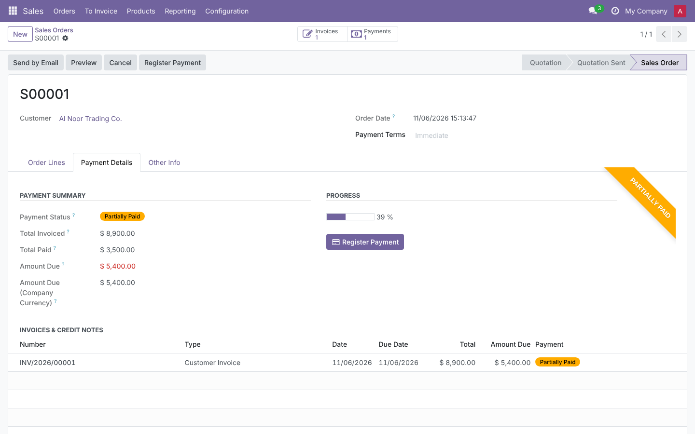
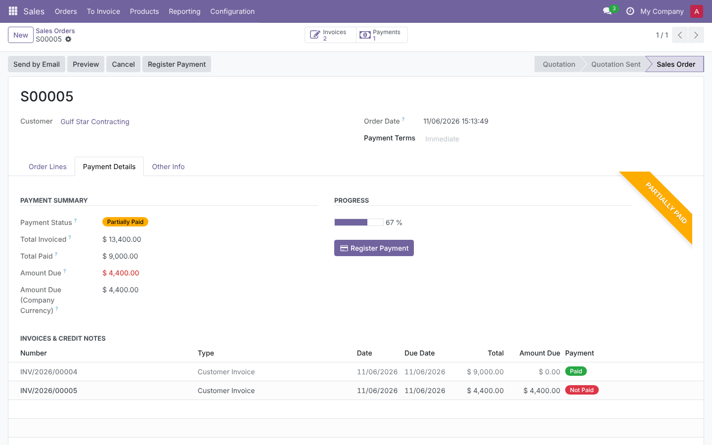
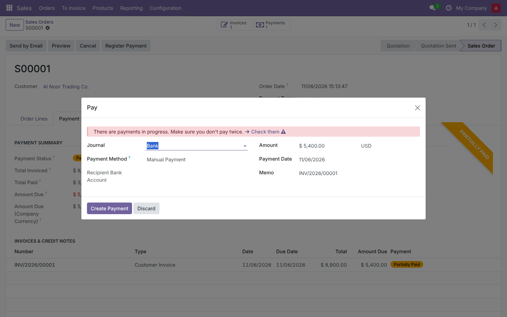
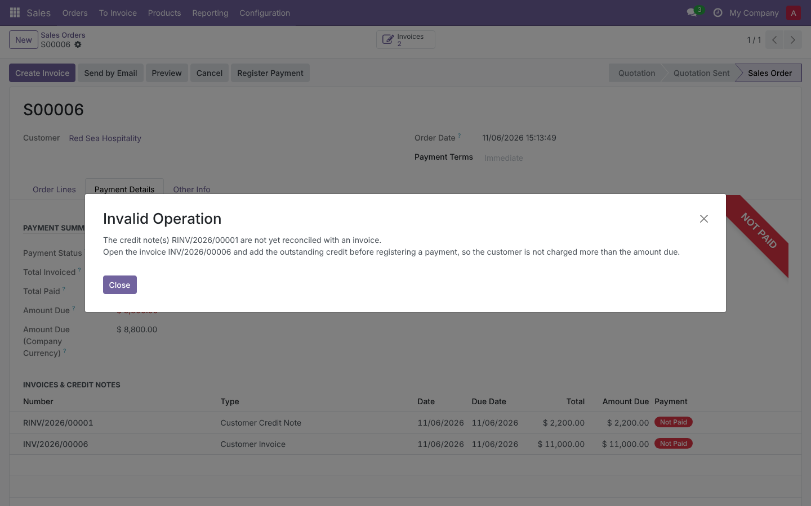
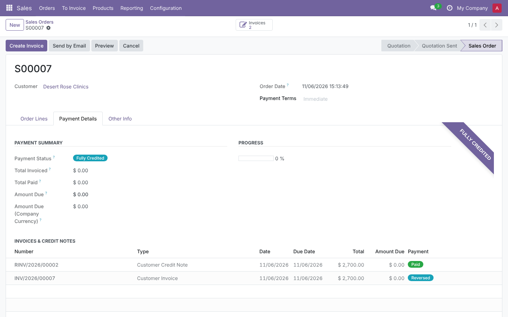
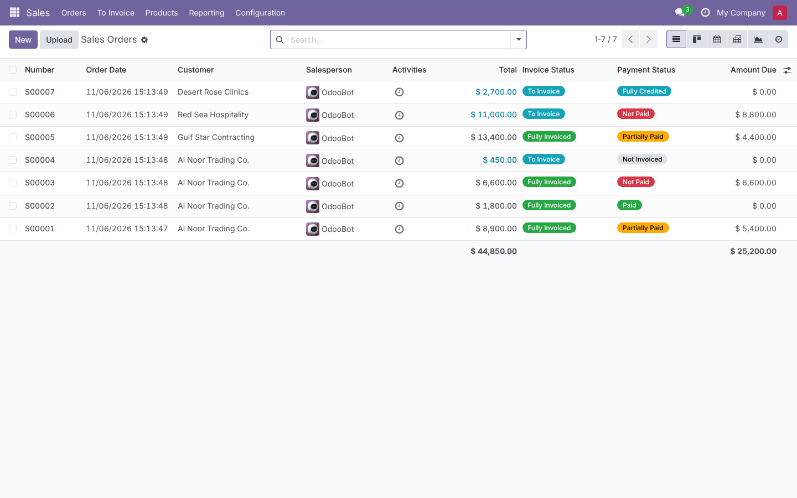
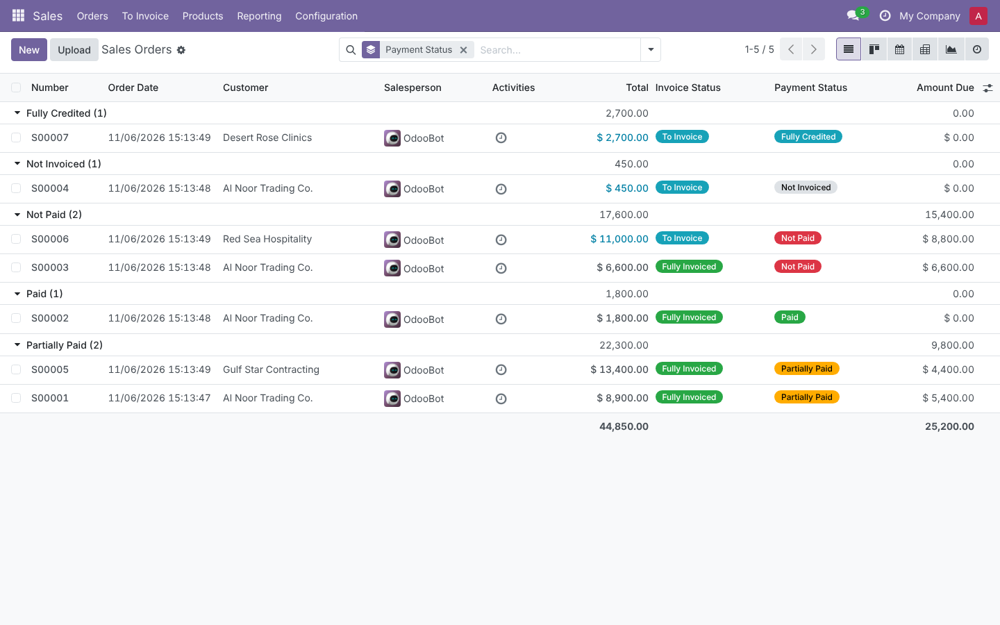
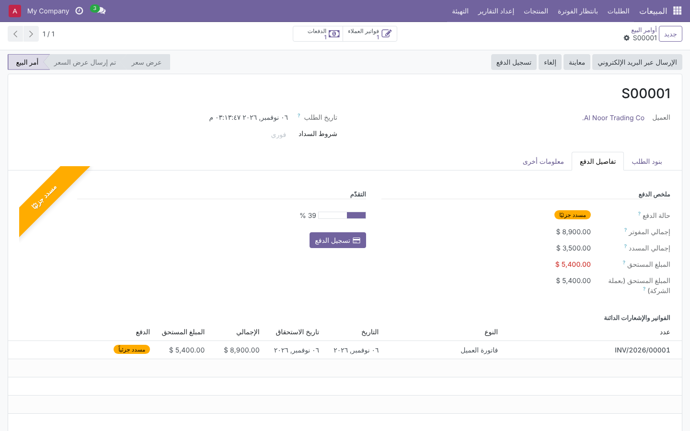
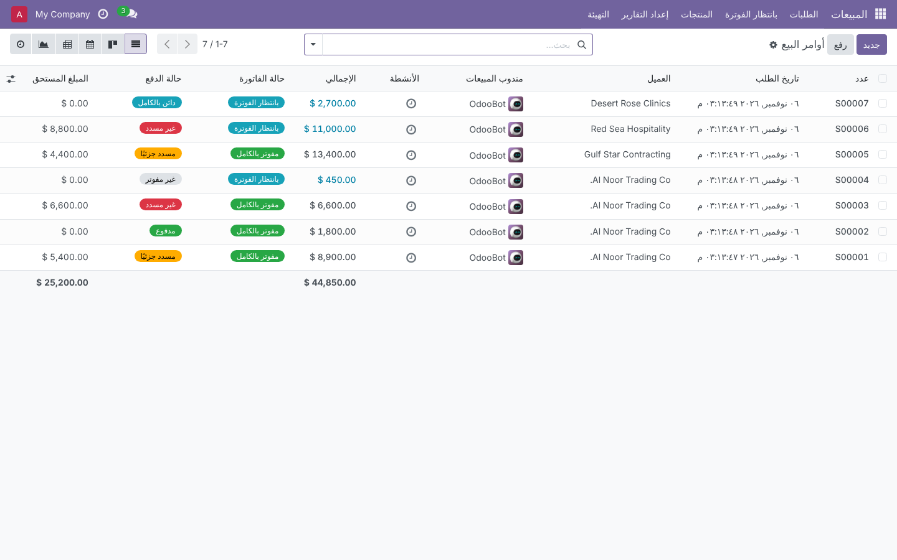

Sales · Invoicing · Payments
Sales Order Payment Status
See on every sales order whether the customer has paid, paid part, or paid nothing – with the exact amount still due. Register the payment from the order itself, without hunting for its invoices.
Odoo 18.0
Community & Enterprise
20 automated tests
Arabic (ar_001) & RTL
Technical name: sale_order_payments_status
LGPL-3
6 statuses
Not Invoiced, Not Paid, Partially Paid, In Payment, Paid, Fully Credited
3 amounts
Total invoiced, total paid and amount due, per order
1 click
Register Payment straight from the sales order
2 currencies
Amount due in order currency and in company currency
Why this module
Sales teams live in the sales order; payments live on invoices. This module brings the payment picture back to the order.
In standard Odoo 18
- The order only shows an Invoice Status; “Fully Invoiced” says nothing about payment.
- To know what is paid you open each invoice one by one.
- With several invoices or a down payment, you add up residuals by hand.
- Credit notes make the real balance even harder to read.
- You cannot filter or group sales orders by paid / unpaid.
- Registering a payment means leaving the order for the invoice.
- A payment not yet matched with the bank shows the invoice In Payment with its full residual – partial or full, you can’t tell.
With this module
- A Payment Status ribbon and badge on every confirmed order.
- A Payment Details tab lists all posted invoices and credit notes with their residuals.
- Total Invoiced, Total Paid and Amount Due are summed for you, across all invoices.
- Credit notes are netted; a negative amount due shows a customer credit.
- Filters and Group By Payment Status in the sales list, with totals.
- Register Payment button on the order, and as a list action for several orders.
- Payments without journal entry are counted as paid, so the order shows exactly what is still due.
How it works
No configuration. Install it and every sales order follows its invoices.
1
Confirm and invoice
Create invoices from the order as usual. Drafts are ignored until posted.
2
Read the status
The order turns Not Paid and shows the amount due in the Payment Details tab.
3
Register payment
Click Register Payment on the order: the standard wizard opens on its open invoices.
4
Status updates itself
Partial, paid, unreconciled or reversed – the order follows instantly.
Features
Screenshots are taken on Odoo 18 with demo data: seven sales orders for four customers covering every status – partial payment, two invoices on one order, an open credit note and a fully reversed invoice.
Menus
Where to find it
- Sales › Orders › Sales Orders › open a confirmed order › Payment Details tab.
- Order header: Register Payment button; next to Invoices at the top of the form, a Payments smart button once a payment is reconciled.
- Sales › Orders › Sales Orders (list): Payment Status and Amount Due columns, filters, Group By › Payment Status.
- List Action › Register Payment for several selected orders.
Feature 1
The full payment picture in one tab
The Payment Details tab shows a status ribbon, Payment Status, Total Invoiced, Total Paid, Amount Due (in red while something is owed), Amount Due (Company Currency), a paid-percentage bar and every posted invoice and credit note with its own payment badge. Here: 3,500 paid on an 8,900 invoice.

Feature 2
Several invoices, one balance
An order invoiced twice: the first invoice (9,000) is Paid, the second (4,400) is Not Paid. The order adds them up – 13,400 invoiced, 9,000 paid, 4,400 due, 67 % – and the Payments smart button lists what was received. Down-payment invoices are counted the same way.

Feature 3
Register Payment from the order
Register Payment opens Odoo’s own Pay wizard on the order’s open invoices, pre-filled with the amount due. Journals, payment methods, partial payments, write-offs and grouping work exactly as from the invoice – including Odoo 18’s “payments in progress” warning against paying twice. The order updates as soon as the payment is created.

Feature 4
Credit notes handled the accounting way
Posted credit notes are subtracted from the invoiced and due amounts. Since Odoo 17 a credit note made with Reverse is reconciled with its invoice automatically, so the order simply shows the reduced amount due. A credit note entered by hand stays open: while an invoice and a credit note are both open, registering a payment is refused with a clear message, so the customer is never charged the full invoice. Apply the outstanding credit on the invoice first.


An invoice fully reversed with Reverse and Create Invoice: the order shows Fully Credited, nothing invoiced, nothing due.
New in the Odoo 18 version
Payments without journal entry, counted right
In Odoo 18 a payment can be registered without a journal entry (typical in Enterprise when the bank journal has no outstanding account): the invoice turns In Payment but keeps its full residual until the bank statement is reconciled. The module counts those payments as paid on the order, spread over the invoices they were registered for, oldest due date first.
| Invoice 1,000 · payment 400 without journal entry | Invoice shows | Order shows |
|---|
| Payment status | In Payment | Partially Paid |
| Amount due | 1,000.00 | 600.00 |
| After paying the remaining 600 | In Payment | In Payment, 0.00 due |
Grouped payment: 200 registered for two orders of 100 and 250 ⇒ first order In Payment, 0 due; second order Partially Paid, 150 due. Cancel a payment and the order goes back to what is really due.
Feature 5
Follow collections from the sales list
The sales order list gets a Payment Status badge and an Amount Due column with a total; Total Invoiced, Total Paid and Amount Due (Company Currency) are optional columns. Filters Not Paid, Partially Paid, In Payment, Paid and With Amount Due, plus Group By › Payment Status, give the collection picture per status.


Feature 6
Fully translated to Arabic, right-to-left
Every label, status, filter, help text and message ships in Arabic (ar_001), using the same terms as Odoo’s own Accounting app – تفاصيل الدفع, مسدد جزئيًا, تسجيل الدفع –. The tab, the ribbon and the spacing mirror correctly in RTL.


Payment statuses
Decided from the posted customer invoices and credit notes of the order, in the order currency.
Not Invoiced no posted invoice or credit note yet
Not Paid amount due ≥ total invoiced
Partially Paid something paid, something still due
In Payment nothing due, a payment not yet matched with the bank statement (Enterprise), with or without journal entry
Paid nothing due
Fully Credited invoices fully cancelled by credit notes
Formulas: Total Invoiced = invoices − credit notes · Amount Due = invoice residuals − credit-note residuals · Total Paid = Total Invoiced − Amount Due.
Example: invoice 1,000, credit note 300 applied, payment 200 ⇒ invoiced 700, due 500, paid 200, Partially Paid.
Built for real-world corner cases
Each of these is covered by an automated test.
Draft and cancelled invoices, locked orders
Only posted documents count, so a draft never shows as “Not Paid”. Locked orders keep their Payment Details tab.
Down payments
The down-payment invoice and the final invoice (with its deduction) add up to the order total.
Payment unreconciled or reset to draft
The order goes back from Partially Paid to Not Paid immediately.
Reverse vs manual credit notes
Reversed credit notes (auto-reconciled since Odoo 17) and hand-made ones give the same net balance; only an open one blocks registration.
Reverse and Create Invoice
The new draft invoice Odoo opens is ignored until it is posted.
Credit note after payment
Amount Due turns negative (customer credit) and Register Payment targets the credit note only.
Foreign currency orders
Amounts read in the document currency, exact to its decimals (tested with a 3-decimal currency and a payment in company currency).
Invoice in another currency than the order
Converted from its company-currency amounts at the invoice date.
Community vs Enterprise
Enterprise’s “In Payment” state is mirrored on the order; Community goes straight to Paid.
Payments without journal entry
Counted as paid, spread oldest due date first; cancelling one restores the amount due.
Several orders at once
List action pays the open invoices of all selected orders, with optional grouped payment.
Large databases
Stored fields recomputed only when a linked invoice changes; searchable and groupable without slow queries.
Security
No new groups: the module follows Odoo’s Sales and Accounting rights.
| Who | Sees / can do |
|---|
| Sales users (Own / All Documents) | Payment Details tab, status, amounts, list columns and filters. No Register Payment button, no Payments smart button; calling the action raises an access error. |
| Accounting › Billing and above | Everything above, plus Register Payment (form, tab and list action) and the Payments smart button. |
| Multi-company | Only invoices of the order’s company are involved; Amount Due (Company Currency) uses that company’s currency. Standard record rules apply. |
Technical details
| Odoo version | 18.0, Community and Enterprise |
| Depends on | sale, account |
| Python dependency | None |
| Menus | None added; extends Sales › Orders (form, list, search) and adds Action › Register Payment |
| Settings | None – works after install; existing orders are computed at install |
| Models | Extends sale.order with stored computed fields (status, invoiced, paid, due, due in company currency, paid %); no new models, no change to invoices or payments |
| Automated tests | 20 TransactionCase tests: status transitions, partial and full payments, In Payment, payments without journal entry (partial, grouped, cancelled), unreconcile, multi-invoice, down payment, multi-order payment, reversed and manual credit notes, full reversal, 3-decimal foreign currency, access rights, search/group, Arabic translation |
| Translations | Arabic (ar_001), RTL layout |
| License | LGPL-3 |